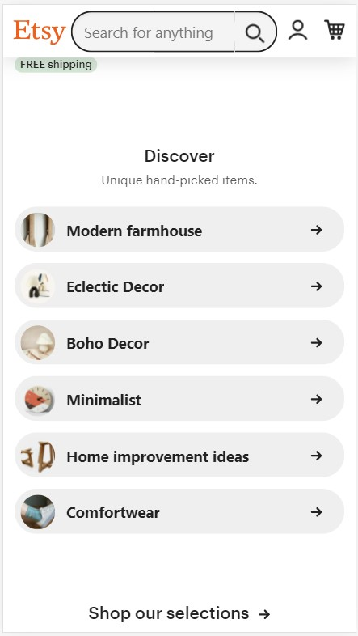
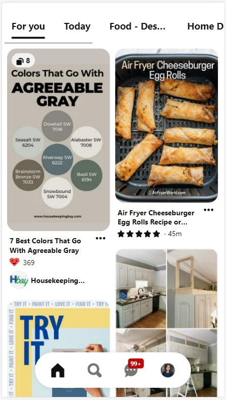
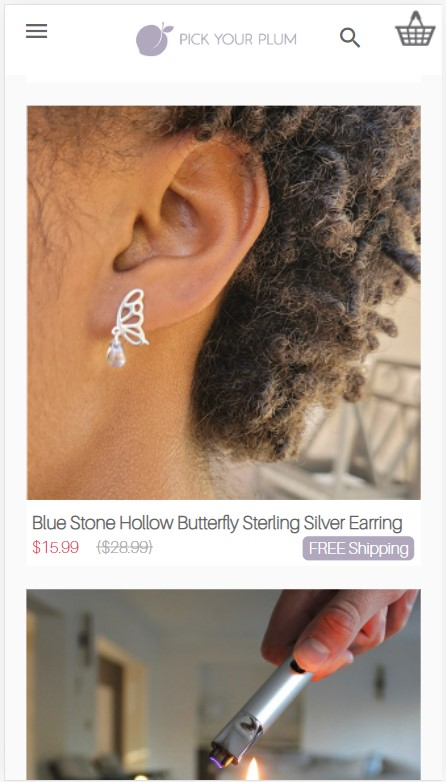

Hick's Law
Etsy -- Etsy.com
Hick's Law is the idea that less is more. The more options we provide, the longer it will take our audience to make a decision. Etsy makes broad category suggestions to the user. They are simple, 1-3 word descriptions meant to draw the user in. Once you pick from the larger category, you are shown items from sub-categories.
White Space
Pinterest -- Pinterest.com
White space is used by Pinterest to keep pins neat and easy to identify. Each pin may be different lengths, but there is a definted white gap between the two columns. The main menu makes the most use of this tool, as it is surrounded by a thick white padding so that it is easy to see and navigate while scrolling.
Contrast
Pick Your Plum -- PickYourPlum.com
Contrast is used to call attention to something "different". Pick Your Plum does this with the price of their items. The color scheme of their website is white and lavender, with black text. However, the price is shown in red. This contrasts everything else on the page and draws your eye to the deal price that is next to the crossed out original price.